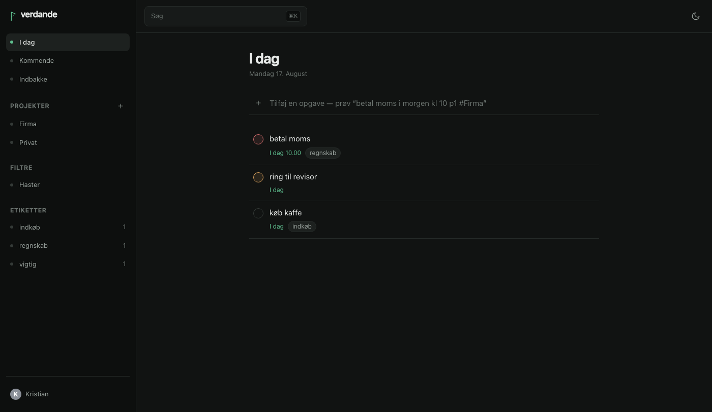
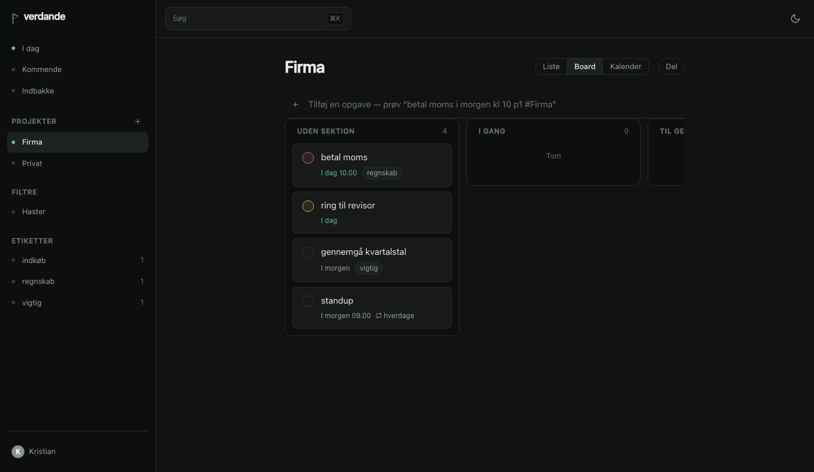
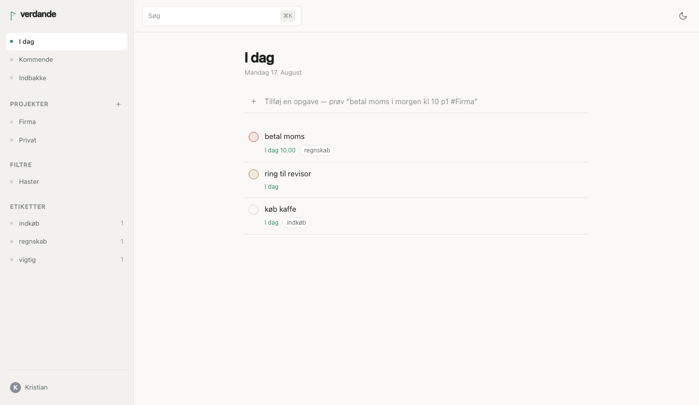

Reads what you type
Dates, times, priorities, projects, labels and repetition, parsed out of one line — in Danish and English, mixed freely.
Self-hosted tasks and projects, shared with the people you share the work with. One binary, SQLite inside it.
Built to be deployed as a Rune in Yggdrasil Panel — upload the manifest, fill in two fields, press start. It also runs anywhere Docker does.
Verdande is one of the three Norns — the one who spins that which is becoming. Not what has been, and not what is fated to be: the thing you are in the middle of. Which is what a to-do list is.
The same line works in Danish —
betal moms på fredag kl 10 p1 #Firma @regnskab — and the two
can be mixed mid-sentence.



Dates, times, priorities, projects, labels and repetition, parsed out of one line — in Danish and English, mixed freely.
Owner, editor and viewer roles. People outside your instance join by invite link. Changes appear live.
Two-way. Tick something off in Apple Reminders and it is ticked off here. Not a read-only feed pretending.
A built-in MCP server. Ask what is due this week, or have a task added, in conversation.
Forward an email to your own address and it becomes a task, subject parsed like anything else you type.
Import from Todoist, export back to it, or take everything as JSON. The round trip is tested, not promised.
This is what it was built for. Runes → Carve a rune, upload
rune/verdande.yaml, create a server from it, set the public address
and your mail server, and start it. No port forwarding — give it a subdomain and
the panel routes it through your Cloudflare Tunnel.
docker run -d --name verdande \
-p 8080:8080 \
-v verdande-data:/data \
-e VERDANDE_BASE_URL=https://todo.example.dk \
ghcr.io/kristianwind/verdande:latestOpen the address and create the first account. That one is the administrator.
VACUUM INTO.No karma or points. No team workspaces. No native apps. No mail integration beyond Gmail and the forwarding address. No languages beyond Danish and English. And no sync protocol of its own — CalDAV and the API are the sync.